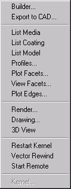

Topics in this section of the Contents tab include dialogs
accessible from the
System menu.
Select one of the commands on this menu that is followed by an
ellipse (...).

Builder Window Overview
The Builder offers a simple approach to building your system. Designed for both new and experienced ASAP users, the Builder introduces you to the concepts of using ASAP to create your geometry, including sources. The entire system’s geometry is created in one window, using most standard spreadsheet navigation features, and saved with the file extension, .enx (an XML file), or .enz (a compressed XML file). You can also use the Builder for tracing rays and analyzing your system.
Export to CAD Dialog
Writes a CAD-compatible system geometry file. Export includes surface representation of all lenses, surface/sampled, and continuous curve- and edge-based objects.
PRINT Models Dialog
The PRINT Models dialog is accessible from the System menu command, List Model.
View Facets (VUFACETS) Dialog
Sets the number of facet subdivisions in each mesh patched direction. Greater numerical values result in smoother looking plots, but larger plot files.
OBLIQUE Dialog
Switches graphical output between normal (orthogonal) projection and oblique (nonorthogonal) projection.
3D Viewer Overview
The BRO 3D Viewer is a powerful, often essential visualization tool for dynamically manipulating geometry, rays, and analysis results. With the 3D Viewer, you can visualize your model and its performance.
ASAP Remote Overview
Remote is a feature of all ASAP products except ASAP Lite. To use it on a client machine, you must have a valid license.
Builder Window Overview
The Builder offers a simple approach to building your system. Designed for both new and experienced ASAP users, the Builder introduces you to the concepts of using ASAP to create your geometry, including sources. The entire system’s geometry is created in one window, using most standard spreadsheet navigation features, and saved with the file extension, .enx (an XML file), or .enz (a compressed XML file). You can also use the Builder for tracing rays and analyzing your system.
Export to CAD Dialog
Writes a CAD-compatible system geometry file. Export includes surface representation of all lenses, surface/sampled, and continuous curve- and edge-based objects.
View Facets (VUFACETS) Dialog
Sets the number of facet subdivisions in each mesh patched direction. Greater numerical values result in smoother looking plots, but larger plot files.
RENDER Dialog
This topic describes the options in the RENDER dialog on the System Menu.
3D Viewer Overview
The BRO 3D Viewer is a powerful, often essential visualization tool for dynamically manipulating geometry, rays, and analysis results. With the 3D Viewer, you can visualize your model and its performance.
ASAP Remote Overview
Remote is a feature of all ASAP products except ASAP Lite. To use it on a client machine, you must have a valid license.